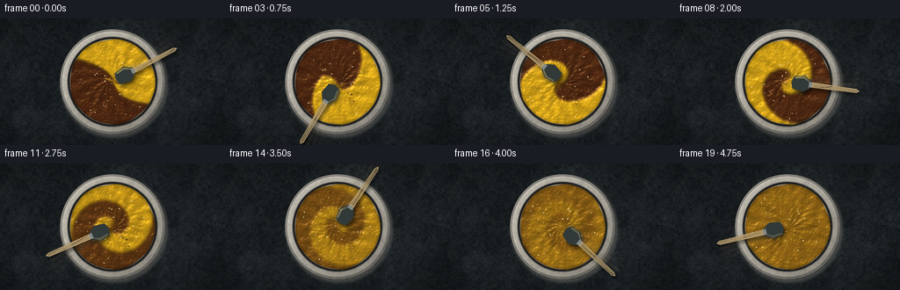
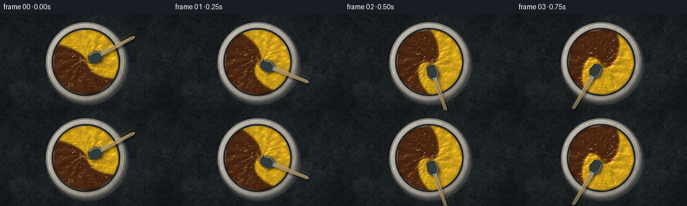

CODING AGENTS AS PIXEL WORLD MODELS
traex/DeepSeek-V4.1-Flash · material_0005
点击播放 · 原生 RGB 像素
逐轮保存的候选
回放视频、检查图与代码变化。
每份候选均可单独播放。实际图片检查记录在下方工具轨迹中。
候选 01播放与检查图
点击播放 · 原生 RGB 像素


展开代码变化
--- 上一保存版本
+++ 本次保存版本
@@ -0,0 +1,440 @@
+from pathlib import Path
+
+import numpy as np
+from PIL import Image, ImageDraw, ImageFilter
+from scipy.ndimage import gaussian_filter
+
+import artifact_io
+
+
+CASE_DIR = Path(__file__).resolve().parent
+WIDTH = 256
+HEIGHT = 144
+FPS = 4
+N_FRAMES = 20
+SS = 4
+RW = WIDTH * SS
+RH = HEIGHT * SS
+
+# Simulation resolution is half the supersampled render resolution.
+SW = 512
+SH = 288
+
+RNG = np.random.default_rng(1847)
+
+
+def smoothstep(edge0, edge1, value):
+ value = np.clip((value - edge0) / (edge1 - edge0), 0.0, 1.0)
+ return value * value * (3.0 - 2.0 * value)
+
+
+def resized_noise(width, height, scale, rng):
+ small_w = max(2, int(np.ceil(width / scale)))
+ small_h = max(2, int(np.ceil(height / scale)))
+ field = rng.normal(size=(small_h, small_w)).astype(np.float32)
+ image = Image.fromarray(field, mode="F").resize((width, height), Image.Resampling.BICUBIC)
+ return np.asarray(image, dtype=np.float32)
+
+
+def fbm(width, height, scales, seed):
+ rng = np.random.default_rng(seed)
+ result = np.zeros((height, width), dtype=np.float32)
+ total = 0.0
+ for scale, amplitude in scales:
+ result += amplitude * resized_noise(width, height, scale, rng)
+ total += amplitude
+ result /= total
+ result -= result.mean()
+ result /= max(result.std(), 1e-6)
+ return result
+
+
+def bilinear_sample(field, sample_x, sample_y):
+ height, width = field.shape
+ sample_x = np.clip(sample_x, 0.0, width - 1.001)
+ sample_y = np.clip(sample_y, 0.0, height - 1.001)
+ x0 = sample_x.astype(np.int32)
+ y0 = sample_y.astype(np.int32)
+ x1 = np.minimum(x0 + 1, width - 1)
+ y1 = np.minimum(y0 + 1, height - 1)
+ fx = sample_x - x0
+ fy = sample_y - y0
+ top = field[y0, x0] * (1.0 - fx) + field[y0, x1] * fx
+ bottom = field[y1, x0] * (1.0 - fx) + field[y1, x1] * fx
+ return top * (1.0 - fy) + bottom * fy
+
+
+def make_initial_paint():
+ yy, xx = np.mgrid[0:SH, 0:SW].astype(np.float32)
+ cx = (SW - 1) * 0.5
+ cy = (SH - 1) * 0.5
+ angle = np.arctan2(yy - cy, xx - cx)
+ boundary = (
+ cy
+ + 5.0 * np.sin(3.0 * angle + 0.35)
+ + 2.4 * np.sin(7.0 * angle + 1.6)
+ + 1.1 * np.sin(13.0 * angle - 0.8)
+ )
+ paint = 0.5 + 0.5 * np.tanh((boundary - yy) / 2.2)
+ paint += 0.025 * np.sin(xx * 0.17 + yy * 0.09)
+ return np.clip(paint, 0.0, 1.0).astype(np.float32)
+
+
+def simulate_paint():
+ yy, xx = np.mgrid[0:SH, 0:SW].astype(np.float32)
+ cx = (SW - 1) * 0.5
+ cy = (SH - 1) * 0.5
+ dx = xx - cx
+ dy = yy - cy
+ radius = np.sqrt(dx * dx + dy * dy)
+ radius_norm = np.clip(radius / 96.0, 0.0, 1.2)
+
+ paint = make_initial_paint()
+ frames = []
+ substeps = 12
+ dt = 1.0 / (FPS * substeps)
+
+ for frame_index in range(N_FRAMES):
+ for substep in range(substeps):
+ time_value = (frame_index + (substep + 1) / substeps) / FPS
+
+ # A differential vortex creates the folded ribbons. Two weaker
+ # travelling vortices keep the flow from looking mechanically radial.
+ omega = 3.15 * (1.08 - 0.42 * radius_norm)
+ u = -dy * omega
+ v = dx * omega
+
+ for phase_offset, strength, orbit in ((0.0, 1.35, 0.58), (2.45, 0.95, 0.43)):
+ orbit_angle = 1.15 * time_value + phase_offset
+ vx = orbit * 96.0 * np.cos(orbit_angle) * 0.5
+ vy = orbit * 96.0 * np.sin(orbit_angle) * 0.5
+ ddx = xx - (cx + vx)
+ ddy = yy - (cy + vy)
+ falloff = np.exp(-(ddx * ddx + ddy * ddy) / (2.0 * 22.0 * 22.0))
+ u += -ddy * strength * falloff
+ v += ddx * strength * falloff
+
+ # Gentle inward/outward breathing improves visible folding near the rim.
+ radial_wave = 0.75 * np.sin(2.8 * time_value + 4.2 * radius_norm)
+ u += radial_wave * dx / np.maximum(radius, 1.0)
+ v += radial_wave * dy / np.maximum(radius, 1.0)
+
+ paint = bilinear_sample(paint, xx - u * dt, yy - v * dt)
+
+ neighbors = (
+ np.roll(paint, 1, axis=0)
+ + np.roll(paint, -1, axis=0)
+ + np.roll(paint, 1, axis=1)
+ + np.roll(paint, -1, axis=1)
+ ) * 0.25
+ paint = paint * 0.992 + neighbors * 0.008
+ paint = np.clip(paint, 0.0, 1.0).astype(np.float32)
+
+ time_value = (frame_index + 1) / FPS
+ blend = 0.96 * smoothstep(2.25, 4.85, time_value)
+ frame_paint = paint * (1.0 - blend) + 0.5 * blend
+ frames.append(frame_paint.astype(np.float32))
+
+ return np.stack(frames, axis=0)
+
+
+def colorize_paint(yellow_fraction):
+ brown = np.array([0.335, 0.165, 0.075], dtype=np.float32)
+ yellow = np.array([0.955, 0.735, 0.105], dtype=np.float32)
+ color = brown[None, None, :] + yellow_fraction[..., None] * (yellow - brown)[None, None, :]
+ return color
+
+
+def make_table_background(xx, yy):
+ fine = fbm(RW, RH, ((4.0, 0.55), (13.0, 0.30), (42.0, 0.15)), 71)
+ broad = fbm(RW, RH, ((75.0, 0.55), (180.0, 0.45)), 72)
+ grain = np.sin(xx * 0.021 + yy * 0.007 + broad * 1.8)
+ grain += 0.35 * np.sin(xx * 0.006 - yy * 0.011 + broad * 2.7)
+ base = np.array([0.115, 0.135, 0.145], dtype=np.float32)
+ color = base[None, None, :] + fine[..., None] * np.array([0.017, 0.018, 0.017])
+ color += grain[..., None] * np.array([0.007, 0.008, 0.008])
+ color *= 0.94 + 0.06 * broad[..., None]
+ return color
+
+
+def make_bowl_layer(xx, yy, cx, cy):
+ radius = np.sqrt((xx - cx) ** 2 + (yy - cy) ** 2)
+ angle = np.arctan2(yy - cy, xx - cx)
+ rim_noise = fbm(RW, RH, ((7.0, 0.55), (24.0, 0.45)), 91)
+
+ layer = np.zeros((RH, RW, 4), dtype=np.float32)
+
+ # Soft cast shadow, strongest below and to the right of the bowl.
+ shadow_x = (xx - (cx + 8.0)) / 1.045
+ shadow_y = (yy - (cy + 12.0)) / 1.045
+ shadow_radius = np.sqrt(shadow_x * shadow_x + shadow_y * shadow_y)
+ shadow_alpha = 0.34 * np.exp(-np.maximum(shadow_radius - 235.0, 0.0) ** 2 / (2.0 * 16.0 * 16.0))
+ shadow_alpha *= smoothstep(245.0, 222.0, shadow_radius)
+ layer[..., 3] = shadow_alpha
+
+ outer_mask = smoothstep(240.0, 236.0, radius)
+ rim_mask = outer_mask * smoothstep(201.0, 206.0, radius)
+ inner_floor_mask = smoothstep(199.0, 195.0, radius)
+
+ light = 0.86 + 0.13 * (-(xx - cx) * 0.55 - (yy - cy) * 0.65) / 236.0
+ rim_base = np.array([0.755, 0.735, 0.685], dtype=np.float32)
+ rim_color = rim_base[None, None, :] * light[..., None]
+ rim_color += rim_noise[..., None] * np.array([0.018, 0.017, 0.015])
+
+ outer_edge = smoothstep(237.5, 234.0, radius) * smoothstep(225.0, 231.0, radius)
+ rim_color *= 1.0 - 0.32 * outer_edge[..., None]
+
+ rim_highlight = np.exp(-((radius - 228.0) / 3.2) ** 2)
+ rim_highlight *= np.clip(0.50 + 0.50 * np.cos(angle + 2.25), 0.0, 1.0)
+ rim_color += 0.14 * rim_highlight[..., None]
+
+ rim_ao = smoothstep(211.0, 201.0, radius) * smoothstep(193.0, 199.0, radius)
+ rim_color *= 1.0 - 0.36 * rim_ao[..., None]
+
+ layer[..., :3] = rim_color
+ layer[..., 3] = np.maximum(layer[..., 3], rim_mask)
+
+ # Dark inner wall separates the paint surface from the ceramic lip.
+ wall = smoothstep(205.0, 200.0, radius) * smoothstep(191.0, 197.0, radius)
+ wall_color = np.array([0.105, 0.086, 0.071], dtype=np.float32)
+ wall_color = wall_color[None, None, :] * (0.70 + 0.30 * light[..., None])
+ layer[..., :3] = layer[..., :3] * (1.0 - wall[..., None]) + wall_color * wall[..., None]
+ layer[..., 3] = np.maximum(layer[..., 3], inner_floor_mask)
+
+ return layer, radius
+
+
+def resize_field(field):
+ image = Image.fromarray(field.astype(np.float32), mode="F")
+ image = image.resize((RW, RH), Image.Resampling.BICUBIC)
+ return np.asarray(image, dtype=np.float32)
+
+
+def make_paint_surface(yellow_fraction, xx, yy, cx, cy, radius, paint_mask, time_value):
+ theta = np.arctan2(yy - cy, xx - cx)
+ rr = np.maximum(radius, 1.0)
+ swirl = np.sin(15.0 * theta + 5.2 * np.log(rr + 3.0) - 4.4 * time_value)
+ swirl += 0.45 * np.sin(29.0 * theta - 8.0 * np.log(rr + 2.0) - 7.2 * time_value + 0.9)
+ grain = fbm(RW, RH, ((2.2, 0.45), (6.5, 0.35), (18.0, 0.20)), 121)
+ coarse = fbm(RW, RH, ((22.0, 0.65), (65.0, 0.35)), 122)
+
+ color = colorize_paint(yellow_fraction)
+ color *= 0.95 + 0.045 * coarse[..., None]
+
+ # Smooth the height field before calculating normals so paint folds read
+ # as broad glossy ridges rather than noisy per-pixel sparkle.
+ height = 0.28 * yellow_fraction + 0.035 * swirl + 0.025 * grain + 0.018 * coarse
+ height = gaussian_filter(height, sigma=2.2)
+ gy, gx = np.gradient(height)
+ normal = np.stack((-gx * 26.0, -gy * 26.0, np.ones_like(height)), axis=-1)
+ normal /= np.linalg.norm(normal, axis=-1, keepdims=True)
+
+ light_vector = np.array([-0.42, -0.66, 0.62], dtype=np.float32)
+ light_vector /= np.linalg.norm(light_vector)
+ diffuse = np.clip(np.sum(normal * light_vector[None, None, :], axis=-1), 0.0, 1.0)
+
+ half_vector = light_vector + np.array([0.0, 0.0, 1.0], dtype=np.float32)
+ half_vector /= np.linalg.norm(half_vector)
+ specular = np.clip(np.sum(normal * half_vector[None, None, :], axis=-1), 0.0, 1.0) ** 34.0
+
+ shade = 0.56 + 0.50 * diffuse
+ color *= shade[..., None]
+ color += specular[..., None] * np.array([0.32, 0.27, 0.16], dtype=np.float32)
+
+ # Fine glossy ridges, plus a subtle ambient occlusion at the bowl wall.
+ ridge = np.clip(swirl, 0.0, 1.0) * 0.035 + np.clip(grain, 0.0, 2.0) * 0.008
+ color += ridge[..., None] * np.array([0.32, 0.23, 0.08], dtype=np.float32)
+ edge_ao = smoothstep(181.0, 194.0, radius)
+ color *= (1.0 - 0.22 * edge_ao[..., None])
+
+ color = np.clip(color, 0.0, 1.0)
+ return color, paint_mask, theta, swirl
+
+
+def transform_points(points, cx, cy, angle):
+ cosine = np.cos(angle)
+ sine = np.sin(angle)
+ transformed = []
+ for x_value, y_value in points:
+ transformed.append((cx + x_value * cosine - y_value * sine, cy + x_value * sine + y_value * cosine))
+ return transformed
+
+
+def draw_tool_image(cx, cy, angle, opacity=255):
+ image = Image.new("RGBA", (RW, RH), (0, 0, 0, 0))
+ draw = ImageDraw.Draw(image)
+
+ handle_poly = transform_points(
+ [(103.0, -12.0), (317.0, -9.0), (331.0, 0.0), (317.0, 9.0), (103.0, 12.0)],
+ cx,
+ cy,
+ angle,
+ )
+ head_poly = transform_points(
+ [(27.0, -28.0), (76.0, -37.0), (108.0, -15.0), (113.0, 0.0),
+ (108.0, 15.0), (76.0, 37.0), (27.0, 28.0), (19.0, 0.0)],
+ cx,
+ cy,
+ angle,
+ )
+
+ draw.polygon(handle_poly, fill=(181, 157, 112, opacity))
+ draw.polygon(head_poly, fill=(49, 57, 57, opacity))
+
+ # Raised edge catches the upper-left key light.
+ highlight_poly = transform_points(
+ [(31.0, -26.0), (74.0, -34.0), (102.0, -14.0), (104.0, -8.0),
+ (73.0, -25.0), (35.0, -20.0)],
+ cx,
+ cy,
+ angle,
+ )
+ draw.polygon(highlight_poly, fill=(113, 126, 123, int(opacity * 0.52)))
+
+ ferrule_poly = transform_points(
+ [(99.0, -13.0), (113.0, -12.0), (113.0, 12.0), (99.0, 13.0)],
+ cx,
+ cy,
+ angle,
+ )
+ draw.polygon(ferrule_poly, fill=(132, 136, 132, opacity))
+
+ # A few restrained wood-grain lines.
+ grain_alpha = int(opacity * 0.30)
+ for offset, phase in ((-5.0, 0.4), (0.0, 1.2), (5.0, 2.1)):
+ points = []
+ for x_value in np.linspace(119.0, 320.0, 18):
+ y_value = offset + 1.5 * np.sin(x_value * 0.045 + phase)
+ points.append((x_value, y_value))
+ draw.line(transform_points(points, cx, cy, angle), fill=(103, 82, 55, grain_alpha), width=2)
+
+ return image
+
+
+def composite_tool(canvas, cx, cy, angle):
+ # Soft moving shadow.
+ shadow_mask = draw_tool_image(cx + 8.0, cy + 11.0, angle, 160)
+ alpha = shadow_mask.getchannel("A").filter(ImageFilter.GaussianBlur(7.0))
+ shadow = Image.new("RGBA", (RW, RH), (0, 0, 0, 0))
+ shadow.putalpha(alpha)
+ shadow_layer = Image.fromarray((np.clip(canvas, 0.0, 1.0) * 255.0).astype(np.uint8), mode="RGB").convert("RGBA")
+ shadow_layer.alpha_composite(shadow)
+ canvas = np.asarray(shadow_layer.convert("RGB"), dtype=np.float32) / 255.0
+
+ base_image = Image.fromarray((np.clip(canvas, 0.0, 1.0) * 255.0).astype(np.uint8), mode="RGB").convert("RGBA")
+
+ # Short shutter blur behind the current pose.
+ for sample_index, sample_opacity in enumerate((36, 22, 12)):
+ previous = angle - (sample_index + 1) * 0.085
+ ghost = draw_tool_image(cx, cy, previous, sample_opacity)
+ ghost = ghost.filter(ImageFilter.GaussianBlur(3.0))
+ base_image.alpha_composite(ghost)
+
+ base_image.alpha_composite(draw_tool_image(cx, cy, angle, 255))
+ return np.asarray(base_image.convert("RGB"), dtype=np.float32) / 255.0
+
+
+def add_paint_droplets(canvas, cx, cy, time_value):
+ droplets = (
+ (0.74, 0.35, 4.5, 3.3, 0.70),
+ (0.82, 0.29, 3.2, 2.3, 0.48),
+ (0.88, 0.47, 2.5, 2.0, 0.34),
+ (0.67, 0.18, 2.7, 2.0, 0.45),
+ (0.93, 0.38, 2.0, 1.6, 0.22),
+ )
+ image = Image.fromarray((np.clip(canvas, 0.0, 1.0) * 255.0).astype(np.uint8), mode="RGB").convert("RGBA")
+ draw = ImageDraw.Draw(image)
+ for index, (angle, radius_factor, rx, ry, threshold) in enumerate(droplets):
+ if time_value < threshold:
+ continue
+ x = cx + np.cos(angle) * 246.0 * radius_factor
+ y = cy + np.sin(angle) * 246.0 * radius_factor
+ tone = 0.43 + 0.08 * (index % 3)
+ draw.ellipse((x - rx, y - ry, x + rx, y + ry), fill=(115, 79, 28, 230))
+ draw.ellipse((x - rx * 0.55, y - ry * 0.55, x, y), fill=(188, 150, 63, 150))
+ draw.ellipse((x - rx * 1.25 + 1.2, y - ry * 1.25 + 1.6, x + rx * 1.25, y + ry * 1.25),
+ outline=(int(65 * tone), int(55 * tone), int(43 * tone), 50), width=1)
+ return np.asarray(image.convert("RGB"), dtype=np.float32) / 255.0
+
+
+def add_bubbles(canvas, cx, cy, time_value):
+ rng = np.random.default_rng(333)
+ image = Image.fromarray((np.clip(canvas, 0.0, 1.0) * 255.0).astype(np.uint8), mode="RGB").convert("RGBA")
+ draw = ImageDraw.Draw(image)
+ for _ in range(26):
+ radius = rng.uniform(9.0, 174.0)
+ theta = rng.uniform(-np.pi, np.pi) + 0.38 * time_value
+ x = cx + radius * np.cos(theta)
+ y = cy + radius * np.sin(theta)
+ size = rng.uniform(0.8, 2.4)
+ alpha = int(rng.uniform(38, 96))
+ draw.ellipse((x - size, y - size, x + size, y + size), fill=(246, 229, 173, alpha))
+ return np.asarray(image.convert("RGB"), dtype=np.float32) / 255.0
+
+
+def render_frames(paint_frames):
+ yy, xx = np.mgrid[0:RH, 0:RW].astype(np.float32)
+ cx = (RW - 1) * 0.5
+ cy = (RH - 1) * 0.5
+ background = make_table_background(xx, yy)
+ bowl_layer, radius = make_bowl_layer(xx, yy, cx, cy)
+
+ angle_noise = (
+ 1.8 * np.sin(5.0 * np.arctan2(yy - cy, xx - cx) + 0.8)
+ + 1.1 * np.sin(9.0 * np.arctan2(yy - cy, xx - cx) + 2.0)
+ + 0.6 * np.sin(15.0 * np.arctan2(yy - cy, xx - cx) - 1.3)
+ )
+ paint_radius = 194.0 + angle_noise
+ paint_mask = smoothstep(paint_radius + 1.0, paint_radius - 2.0, radius)
+
+ bowl_rgba = Image.fromarray((np.clip(bowl_layer, 0.0, 1.0) * 255.0).astype(np.uint8), mode="RGBA")
+ background_image = Image.fromarray(
+ (np.clip(background, 0.0, 1.0) * 255.0).astype(np.uint8), mode="RGB"
+ ).convert("RGBA")
+ background_image.alpha_composite(bowl_rgba)
+ base_canvas = np.asarray(background_image.convert("RGB"), dtype=np.float32) / 255.0
+
+ output_frames = []
+ for frame_index, paint_frame in enumerate(paint_frames):
+ time_value = frame_index / FPS
+ concentration = resize_field(paint_frame)
+ concentration = np.clip(concentration, 0.0, 1.0)
+
+ paint_color, mask, theta, swirl = make_paint_surface(
+ concentration, xx, yy, cx, cy, radius, paint_mask, time_value
+ )
+ canvas = base_canvas * (1.0 - mask[..., None]) + paint_color * mask[..., None]
+
+ # Scattered paint splashes appear as the stirring becomes vigorous.
+ canvas = add_paint_droplets(canvas, cx, cy, time_value)
+ canvas = add_bubbles(canvas, cx, cy, time_value)
+
+ # Stirring speed eases only in the last half-second after the blend is complete.
+ speed = 3.45 if time_value < 4.45 else 2.0
+ if time_value < 4.45:
+ tool_angle = -0.48 + 3.45 * time_value
+ else:
+ tool_angle = -0.48 + 3.45 * 4.45 + 2.0 * (time_value - 4.45)
+ canvas = composite_tool(canvas, cx, cy, tool_angle)
+
+ # Gentle vignette and a final top-left key-light wash.
+ vignette_radius = np.sqrt(((xx - cx) / 560.0) ** 2 + ((yy - cy) / 310.0) ** 2)
+ vignette = 1.0 - 0.20 * smoothstep(0.62, 1.18, vignette_radius)
+ canvas *= vignette[..., None]
+
+ image = Image.fromarray((np.clip(canvas, 0.0, 1.0) * 255.0).astype(np.uint8), mode="RGB")
+ image = image.resize((WIDTH, HEIGHT), Image.Resampling.LANCZOS)
+ output_frames.append(np.asarray(image, dtype=np.uint8))
+
+ return np.stack(output_frames, axis=0)
+
+
+def main():
+ paint_frames = simulate_paint()
+ frames = render_frames(paint_frames)
+ artifact_io.save(frames, CASE_DIR)
+ print(f"Saved {frames.shape[0]} frames at {frames.shape[2]}x{frames.shape[1]} to {CASE_DIR}")
+
+
+if __name__ == "__main__":
+ main()
候选 02播放与检查图
点击播放 · 原生 RGB 像素
展开代码变化
--- 上一保存版本
+++ 本次保存版本
@@ -2,7 +2,6 @@
import numpy as np
from PIL import Image, ImageDraw, ImageFilter
-from scipy.ndimage import gaussian_filter
import artifact_io
@@ -64,6 +63,19 @@
return top * (1.0 - fy) + bottom * fy
+def gaussian_blur(field, sigma):
+ radius = max(1, int(np.ceil(3.0 * sigma)))
+ coordinates = np.arange(-radius, radius + 1, dtype=np.float32)
+ kernel = np.exp(-(coordinates * coordinates) / (2.0 * sigma * sigma))
+ kernel /= kernel.sum()
+
+ padded = np.pad(field, ((radius, radius), (0, 0)), mode="edge")
+ blurred = sum(kernel[index] * padded[index:index + field.shape[0]] for index in range(kernel.size))
+ padded = np.pad(blurred, ((0, 0), (radius, radius)), mode="edge")
+ blurred = sum(kernel[index] * padded[:, index:index + field.shape[1]] for index in range(kernel.size))
+ return blurred.astype(np.float32)
+
+
def make_initial_paint():
yy, xx = np.mgrid[0:SH, 0:SW].astype(np.float32)
cx = (SW - 1) * 0.5
@@ -224,7 +236,7 @@
# Smooth the height field before calculating normals so paint folds read
# as broad glossy ridges rather than noisy per-pixel sparkle.
height = 0.28 * yellow_fraction + 0.035 * swirl + 0.025 * grain + 0.018 * coarse
- height = gaussian_filter(height, sigma=2.2)
+ height = gaussian_blur(height, sigma=2.2)
gy, gx = np.gradient(height)
normal = np.stack((-gx * 26.0, -gy * 26.0, np.ones_like(height)), axis=-1)
normal /= np.linalg.norm(normal, axis=-1, keepdims=True)
可观测工具轨迹
实际执行的命令与返回图片。
命令 1exit 0
/bin/bash -c "pwd && rg --files -g 'prompt.txt' -g 'GENERATION_RULES.md' -g 'task_spec.json' -g '"'!node_modules'"' -g '"'!vendor'"'"
命令 2exit 0
/bin/bash -c 'ls -la'
命令 3exit 0
/bin/bash -c 'cat GENERATION_RULES.md'
命令 4exit 0
/bin/bash -c 'cat prompt.txt'
命令 5exit 0
/bin/bash -c 'cat task_spec.json'
命令 6exit 0
/bin/bash -c "sed -n '1,240p' artifact_io.py && sed -n '1,220p' player_template.html"
命令 7exit 1
/bin/bash -c 'python generate.py'
命令 8exit 1
/bin/bash -c 'python generate.py'
命令 9exit 0
/bin/bash -c 'python -c "import scipy; print(scipy.__version__)"'
命令 10exit 0
/bin/bash -c 'python generate.py'
命令 11exit 0
/bin/bash -c 'which chafa || which viu || which jp2 || true'
命令 12exit 127
/bin/bash -c 'ls -lh inspection.png frames/*.png | head -25 && file inspection.png'
命令 13exit 0
/bin/bash -c "python - <<'PY'
import numpy as np
from PIL import Image
for i in [0,4,9,14,19]:
im=np.asarray(Image.open(f'frames/{i:02d}.png'))
print(i, im.shape, 'mean', np.round(im.mean((0,1)),1), 'std', np.round(im.std((0,1)),1), 'paint center', im[72,128], 'paint region mean', np.round(im[45:100,65:190].mean((0,1)),1))
PY"命令 14exit 0
/bin/bash -c "python - <<'PY'
import numpy as np
from PIL import Image
for idx in (0, 9, 19):
a=np.asarray(Image.open(f'frames/{idx:02d}.png')).astype(float)
print('\\nFRAME',idx)
for y in range(0,144,4):
row=''
for x in range(0,256,4):
r,g,b=a[y:y+4,x:x+4].mean((0,1))
if r+g+b<80: c=' '
elif r>165 and g>125 and b<80: c='Y'
elif r>115 and g>70 and b<65 and r-g<65: c='b'
elif abs(r-g)<16 and abs(g-b)<18 and r>95: c='C'
elif r>90 and g>65 and b<80 and r-g<40: c='w'
elif r<65 and g<70 and b<70: c='T'
else: c='.'
row+=c
print(row)
PY"命令 15exit 0
/bin/bash -c "python - <<'PY'
from PIL import Image
import numpy as np
im=Image.open('inspection.png')
print(im.size)
im.resize((1024,330)).save('.tmp/inspection_large.png')
PY"命令 16exit 0
/bin/bash -c 'which ffmpeg || true'
命令 17exit 0
/bin/bash -c "python - <<'PY'
import numpy as np
from PIL import Image
frames=np.stack([np.asarray(Image.open(f'frames/{i:02d}.png')).astype(float) for i in range(20)])
d=np.abs(frames[1:]-frames[:-1]).mean((1,2,3))
print('adjacent mean abs diff:', np.round(d,2))
print('min/max:',d.min(),d.max())
for i in (0,4,9,14,19):
im=frames[i]
# central paint disk, excluding tool wedge where possible
yy,xx=np.mgrid[:144,:256]
mask=((xx-128)**2/78**2+(yy-72)**2/45**2)<1
vals=im[mask]
print(i,'disk mean',np.round(vals.mean(0),1),'p10',np.round(np.percentile(vals,10,axis=0),1),'p90',np.round(np.percentile(vals,90,axis=0),1))
PY"命令 18exit 0
/bin/bash -c "python - <<'PY'
import numpy as np
from PIL import Image
for i in (0,4,9,14,19):
im=np.asarray(Image.open(f'frames/{i:02d}.png')).astype(float)
yy,xx=np.mgrid[:144,:256]
m=((xx-128)**2+(yy-72)**2)<34**2
v=im[m]
print(i, 'mean', np.round(v.mean(0),1), 'std', np.round(v.std(0),1), 'p05', np.round(np.percentile(v,5,axis=0),1), 'p95', np.round(np.percentile(v,95,axis=0),1))
PY"命令 19exit 0
/bin/bash -c "python - <<'PY'
import numpy as np
from PIL import Image
for i in (0,5,10,15,19):
im=np.asarray(Image.open(f'frames/{i:02d}.png')).astype(float)
yy,xx=np.mgrid[:144,:256]
rr=((xx-128)/1.0)**2+((yy-72)*1.5)**2
m=(rr<55**2)&(rr>42**2)
# Right wedge, outside tool-shadow-dominated left/bottom-center.
v=im[m]
print(i, np.round(v.mean(0),1), np.round(v.std(0),1))
PY"命令 20exit 0
/bin/bash -c "python - <<'PY'
import json, numpy as np
from pathlib import Path
from PIL import Image
spec=json.loads(Path('task_spec.json').read_text())
with np.load('pixels.npz') as z:
p=z['pixels']
print('pixels',p.shape,p.dtype,'range',int(p.min()),int(p.max()))
print('expected',spec['height'],spec['width'],spec['frames'])
assert p.shape==(spec['height'],spec['width'],spec['frames'])
assert (p.max()>>24)==0
for i in (0,19):
im=np.asarray(Image.open(f'frames/{i:02d}.png'))
print(i, im.shape, im.dtype, 'ok')
print('index bytes',Path('index.html').stat().st_size,'npz bytes',Path('pixels.npz').stat().st_size)
PY"命令 21exit 0
/bin/bash -c 'git status --short 2>/dev/null || true && ls -lh task_spec.json prompt.txt generate.py pixels.npz inspection.png index.html'
命令 22exit 0
/bin/bash -c "python - <<'PY'
from PIL import Image
import numpy as np
im=np.asarray(Image.open('frames/00.png')).astype(float)
# Grid of representative pixels from paint disk, avoiding tool at upper left.
for y in (50,60,70,80,90):
print('y',y,[(x,tuple(im[y,x].astype(int))) for x in (75,95,115,135,155,175,190)])
PY"命令 23exit 0
/bin/bash -c "python - <<'PY'
import numpy as np
from PIL import Image
im=np.asarray(Image.open('frames/00.png')).astype(float)
yy,xx=np.mgrid[:144,:256]
for ang in range(0,360,30):
t=np.deg2rad(ang)
rr=np.sqrt((xx-128)**2+(yy-72)**2)
m=(np.abs(np.arctan2(yy-72,xx-128)-t)<0.22)&(rr>38)&(rr<68)
v=im[m]
print(f'{ang:3d}',np.round(v.mean(0),1),len(v))
PY"命令 24exit 0
/bin/bash -c "python - <<'PY'
import numpy as np
from PIL import Image
for i in [0,5,10,15,19]:
im=np.asarray(Image.open(f'frames/{i:02d}.png')).astype(float)
yy,xx=np.mgrid[:144,:256]
rr=np.sqrt((xx-128)**2+(yy-72)**2)
th=np.arctan2(yy-72,xx-128)
mask=(rr>36)&(rr<63)&(np.abs(th)<0.55)
v=im[mask]
print(i,np.round(v.mean(0),1),np.round(v.std(0),1))
PY"命令 25exit 0
/bin/bash -c 'python generate.py'
命令 26exit 0
/bin/bash -c "python - <<'PY'
import json
from pathlib import Path
import numpy as np
from PIL import Image
spec=json.loads(Path('task_spec.json').read_text())
with np.load('pixels.npz') as data:
pixels=data['pixels']
assert pixels.shape == (spec['height'], spec['width'], spec['frames'])
assert pixels.dtype == np.uint32
frames=[np.asarray(Image.open(f'frames/{i:02d}.png')) for i in range(spec['frames'])]
assert all(frame.shape == (spec['height'], spec['width'], 3) and frame.dtype == np.uint8 for frame in frames)
assert Path('index.html').stat().st_size > 0
assert Path('inspection.png').stat().st_size > 0
adjacent=np.stack([np.abs(frames[i].astype(np.int16)-frames[i-1].astype(np.int16)).mean() for i in range(1,len(frames))])
print('contract: OK')
print('frame count:',len(frames),'resolution:',frames[0].shape[1], 'x', frames[0].shape[0])
print('adjacent mean change:',round(float(adjacent.mean()),2),'first/last:',round(float(adjacent[0]),2),round(float(adjacent[-1]),2))
print('artifacts: pixels.npz, frames/, inspection.png, transition_check.png, index.html')
PY"保存候选 2 份；完成命令 26 次；可验证图片返回 0 张。原始 API 响应与完整日志保留在本地。